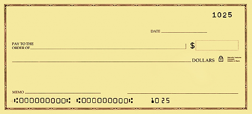
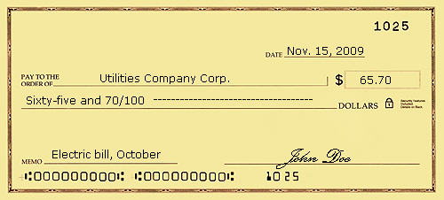

Whether you're new to the United States, a teenager or young adult opening an account for the first time, or you just want a better understanding of one of the main places to stash your money and start building wealth, this tutorial will tell you everything you need to know about how checking and savings accounts work.
To get started with banking, you'll need to decide what bank you want to use and open an account. In this section, we'll tell you how to take these first steps. But first, let's answer the question that surprisingly, a lot people who are unfamiliar with banking still ask: Why use a bank in the first place?
Those who are new to banking or who have lived in other countries where the banking system can't be trusted might be wondering why they would want to use a bank at all. It's certainly possible to operate on a cash-only system, but that isn't the best idea for several reasons:
Storing all your money in cash at home just isn't safe. Your home could be burglarized, flood, or catch on fire. In the event of a burglary, most of those places you thought were great for hiding your money will probably be found. (You aren't the first person who has considered hiding money in the produce drawer of your fridge.) If you bury your money in the back yard, the container you put it in could become damaged or start decomposing and destroy your money. Less dramatically, you could simply forget about all the places you've stashed money, or someone else who lives in or visits your household could find it and take it.
Once you have more than a few hundred dollars to your name, it's really best to have a secure place to put your money. As long as you choose a legitimate bank that has Federal Deposit Insurance Corporation (FDIC) insurance, any money you put in the bank (up to FDIC insurance limits) is protected by the
When you have money in the bank, you can access it from anywhere. A checking account also makes it much easier to pay bills - you'll no longer have to pay bills in person, and you won't need to purchase a cashier's check every time you need to send money through the mail. You can just write a check from your checking account and put it in the mail. You can even transfer money online, often for free.
Once you have enough money, you'll want to go beyond a checking account and start saving and investing your money to optimize your future financial situation. You simply can't take advantage of the opportunity to earn money in the stock market or earn interest on deposits if you're not willing to keep your cash anywhere except your mattress. (Find out what putting your money to work can do for you in Stashing Your Cash: Mattress Or Market?)
Before you spend too much time deciding what bank to use, you should first make sure you will qualify to open a checking account. Here's what banks generally need from customers.
You'll usually need at least $1 to open an account, but some banks will require a higher amount, such as $100, $500, or more, depending on the type of checking account you want. For example, checking accounts that pay interest often have higher opening deposit and ongoing balance requirements.
Acceptable identification includes your Social Security number, tax identification number, or permanent resident card and driver's license or state identification card.If you are opening a
This will include your address, phone number and email address.
Also, you will generally need to be at least 16 and sometimes 18 years old to open a bank account. If you're younger, you may be able to open a joint account with a parent or legal guardian. (If you're opening your very first account, check out Your First Checking Account.)
With a little common sense, most people won't have any trouble selecting a reputable bank. It's true that even reputable, big-name banks can fail (like Washington Mutual in 2008), but like we said, FDIC insurance will protect your money in those situations. Here are some criteria to consider when choosing where to open a checking account.
First and foremost, you want to use a legitimate bank. Sticking with a large, widely known bank should be a safe bet. If you're considering a smaller institution, or if you just want to be extra safe, use the Bank Find tool at the FDIC's Web site to make sure the bank is a member of the FDIC. If you want to do more in-depth research, see the FDIC's Institution Directory and its Call & Thrift Financial Reports.
Most people want to use a bank that has a branch close to where they live and/or work so that visiting a teller and the ATM to make deposits and withdrawals will be convenient.
If you never leave town, there's no reason not to use a small, local bank. However, if you travel, you should choose a national or international bank so you'll have easy access to your money when you're out of town and won't have to pay services charges to use another bank's ATM to access your cash.
Some banks don't cost any money to use as long as you keep your account balance in the black, while others nickel and dime their customers with fees at every turn. Even small fees can add up over time and eat into your account balance, so look at a bank's fee schedule very carefully before you sign up and make sure you understand what you need to do to avoid fees - even if you sign up with a bank that advertises free checking. (Find out how to get the bank to pay you for using their services, not the other way around, in Cut Your Bank Fees.)
This may be hard to determine if you've never had a checking account before, but consider what would make banking comfortable and convenient for you. Do you prefer to talk to someone in person or interact with a machine? Do you want to be able to write lots of checks or would you rather pay bills online? What time of day/day of the week is convenient for you to bank? How responsible/forgetful are you with your money? Different banks have different features, and even different checking accounts within the same bank are designed to appeal to different sets of needs. If you have some idea of what you want, it will be a lot easier to pick the bank that's right for you.
Some bank accounts are designed for customers with large amounts of cash. If you're not one of those people, that's okay there are also plenty of options for people with smaller balances.
Some bank accounts are designed for people who can have their regular paycheck directly deposited by their employer. If you won't be making deposits this way, you'll need a more traditional account.
The ability to write checks from your checking account allows you to pay bills or send money to relatives more securely than using cash and less expensively than using a cashier's check or wire transfer service. In this section, we'll teach you how to do it.
The Anatomy of a Check
First, you should understand the different parts of a check. Along the check's bottom edge will be a long series of numbers. The first series, on the left, is the routing number. This is a nine-digit number that identifies your bank and is used by financial institutions to process checks. Routing numbers, more formally called routing transit numbers, are sometimes also called
Next to the routing number will be your account number. With the routing number and your account number, the bank that ultimately processes the check you write will know what bank to get the money from (using the routing number) and specifically, what account within that bank the money should come from (using your account number).
To the right of your account number will be the check number. This same number also appears at the top of your check in the right corner. The check number is basically just a recordkeeping device that helps you and your bank keep track of the checks you've written. If you ever need to locate information about a check after you've written it, instead of searching for a dollar amount, a date, and a payee, you can simply use the check number. Check numbers will never repeat within the same account.
Finally, the reason the routing number, account number and check number at the bottom of your check are in that funny-looking type is so they can be easily read by machines that process checks.
How to Write a Check
Writing a check is simple once you know what you're doing, but it can be confusing when you haven't done before. What goes in all those blank spots?
|  |
| Figure 1: Blank check |
|  |
| Figure 2: Completed check |
On the top right side, there's a short line where you'll fill in the date. In the past, people used to post-date their checks so that they couldn't be cashed right away. For example, if someone needed to send a check to pay the water bill on the March 13 but knew they weren't getting paid until March 15, they might write March 16 on the check even though the actual date was March 13. Today, that strategy is useless because of Check 21 (we'll discuss this more in a minute), so you might as well put today's date on the check.
In the middle of the check are two long lines. The first one says in small print to the left the line, "Pay to the order of". Here you simply write the name of the person65.7065 or company you want to give money to. It's important to use the person or business's formal name so that the check will be accepted (so don't write any checks to "mom"). You can even write checks to yourself. (You would do this if you wanted to transfer money from your checking account to another account that you own.) If you're not sure what name to write on the line, ask the business, "Who should I make this check out to?"
In the box to the right of this line, you write, in numbers, the amount that the check is for. Easy, right? Then comes the part that might be the most confusing for beginners. This is the line underneath "Pay to the order of" where you write out, in words, the dollar amount of the check. Let's use a check for $65.70 as an example. You could write "Sixty-five and 70/100" or "Sixty-five dollars and 70 cents" or "Sixty-five dollars and 70/100." It doesn't really matter which of these methods you use - as long as the dollar amount you write in the box is the same as the dollar amount you write out on the line, the check will go through.
At the bottom left of the check is a blank line that says "memo" next to it. Filling out this line is optional. Most people use it for one of two things: 1) when paying a bill, they write their account number on this line, or 2) they write what the check is for on this line so when they look at the canceled check or carbon copy later, they'll remember what the check was for.
Last, make sure to sign the check. Without a signature, your check will not be accepted. The signature line is the bottom right line on the check.
Check 21: Clearing for the 21st Century Act
The Clearing for the 21st Century Act (Check 21) is a federal law that was enacted in 2004. It allows checks to be processed without physically transporting a paper check from one place to another. Instead, an electronic image of the check can be used. This technology makes it less expensive for banks and other companies to process checks and also means that checks get cashed faster. The delay that used to exist between the time you wrote your check and the time it was actually cashed was called a "float." Today, the only lag time between when you write a check and when it gets deposited is the amount of time it takes any check you mail to get through the postal system and be dealt with by the recipient.
The best way to avoid any problems with float time is to not write a check unless you actually have the money in your account. Often, any fee you would incur for paying a bill late will be lower than the overdraft fees you'll incur if you write a check for more than what's in your account. It's also important to note that if you write several checks on or around the same date, your bank will generally remove the money from your account in the way that is most likely to benefit the bank. This means that the biggest checks will be cashed first, and if you don't have enough money in your account, you'll incur an insufficient funds fee or overdraft fee for every bounced check. (To learn more about how this happens and how to avoid it, read When Good People Write Bad Checks.)
To use your checking account on an ongoing basis, you'll have to put money in to replace the money you take out. We'll teach you how in the following section.
Making deposits is a key part of having a checking account. If you don't make deposits, your checking account will eventually run out of money and you won't be able to use it anymore. Here, we'll explain how to get more money into your checking account so things keep running smoothly.
How to Make a Deposit
When you receive a check that you want to deposit, flip it over. There are usually a few lines on one end of the check that say "Endorse Here." Endorsing a check basically just means signing your name on the back. You need to sign the endorsement line in order to claim your money - the bank will reject any check you try to deposit that isn't endorsed. Some people also write their account number under their signature, but this isn't usually required.
Then, if you're depositing the check at an ATM, you'll either put the check in an envelope or, at some banks, put the check itself into the ATM. If you're making a deposit through a bank teller or through the mail, you'll also have to fill out a deposit slip. On the deposit slip, you list the amounts of each of the checks you're submitting and the total amount of the deposit. If you're concerned about making a deposit correctly, you may want to do it with the assistance of a bank teller the first couple times, but after that you'll probably find it more convenient to make your deposit at an ATM or by mail.
You can also add money to your account by having your employer directly deposit your paycheck to your account, electronically transferring funds from an account you have at another financial institution, or depositing cash. It is possible to deposit cash at an ATM, but many people are not comfortable doing this because there is no way to prove the amount of the deposit or reclaim the money if there is a bank error. You should never send cash for deposit through the mail because of the possibility of theft.
Funds Availability
When you make a deposit, the new money may not be available immediately. The length of time you'll have to wait to access those funds varies because banks place holds on customers' deposits to protect themselves from fraud. According to the U.S. Treasury's Comptroller of the Currency, a bank can make the deposit available immediately or delay availability up to the maximum prescribed by law. The account agreement you receive when you open a checking account will explain your bank's rules on deposit holds, but here are some general guidelines.
The U.S. Treasury's Comptroller of the Currency has more details on the rules regarding the availability of deposits on its website, Answers About Funds Availability.
Direct Deposits and ACH Transfers
There are two other common ways to move money into and out of your checking account.
The first is an automated clearing house transfer, more commonly known as an ACH transfer. This type of transaction can be used for both withdrawals and deposits and is a way of sending money electronically. It often takes several days for the transaction to complete, but there are generally no fees involved.
To conduct an ACH transfer, you'll need to give your name, routing number and account number as they appear on your checks to the institution you want to send money to. For example, if you have a credit card account that you want to pay online, you can set up ACH transfers with your credit card company. Then, once they've verified your information, instead of having to mail a check to pay your credit card, you can do it with a few mouse clicks.
ACH transfers can also be used to transfer money between financial institutions. For example, if you have a checking account with a particular bank and a brokerage account with a particular investment company, you can use ACH transfer to send money from your checking account to your investment account (or vice versa).
The second is a direct deposit, which is just a fancy name for a specific kind of ACH transfer. This is usually an agreement among an employer, an employee, and their banks to have the funds that constitute the employee's paycheck transferred directly into his or her checking account instead of handing the employee a physical check. This arrangement can make life easier for both you and your employer, and if you get paid by direct deposit, the funds should be available to you on payday.
The only drawback of direct deposit is that you'll have to give your checking account number to your employer, and if you'd prefer not to give that information out, you'll be better off receiving a paper check. It's worth noting, though, that some banks will waive monthly fees or offer incentives if you have your paycheck deposited directly.
In the next section, we'll learn how you can use ATMs and debit cards to access the funds in your checking account.
Debit cards and ATMs allow you to easily access the money in your checking account to pay for everyday purchases. In this section, we'll explain how they work.
Debit Cards
A debit card, sometimes called a check card (because it is similar to a check in that it allows you to access the money in your checking account), is very similar to a credit card. In fact, many have a 16-digit number and a Visa or Mastercard logo and can be used like a credit card for purchases, with the major difference that the money still comes out of your account right away - you don't have the option of paying off your purchases later. A debit card is what you use to make purchases at stores when you want the convenience of plastic (as opposed to cash or checks) but want to pay immediately instead of accruing a balance on a credit card. (For more insight, see Credit, Debit And Charge: Sizing Up The Cards In Your Wallet and Are credit cards and debit cards considered debt instruments?)
Debit cards are also how you withdraw cash from your checking account through an automated teller machine (ATM). To access your money this way, you'll need to use a personal identification number (PIN) that you can establish when you open your account or that the bank will assign to you. PINs provide an added layer of protection if your card is lost or stolen, so you should choose a PIN that would be difficult for someone else to guess. Memorize this number (definitely don't write it on your card), and never tell it to anyone. If you have to write it down somewhere, keep this information at home, not in your wallet or purse.
In addition to using your PIN to make ATM withdrawals, if you select the debit option when using your debit card to make a purchase at a store, you'll need to enter your PIN then as well. If your debit card has a credit card logo, you may be better off selecting the credit option to minimize the possibility of a stranger watching you enter your PIN. Some banks have a preference for whether you select debit or credit at the register when using your debit card to make a purchase; they may reward you for selecting their preferred option and/or penalize you for doing the opposite, so make sure to read the terms, conditions and fee schedule of your checking account agreement.
Some cards, however, do not have 16-digit credit-card-like numbers and do not have a credit card logo. These cards can only be used to withdraw cash from an ATM and cannot be used to make purchases. These are known as ATM cards, rather than debit cards.
ATMs
Automated teller machines allow you to make deposits and withdrawals without visiting a bank teller. Lines are usually shorter (or nonexistent), you can access your cash even when the bank itself is closed, and there's no human interaction involved. ATMs can be found at banks, in grocery stores, in airports, in hotels, in clubs, in restaurants, in gas stations, and at a few other places. If you use an ATM at any branch of your bank, it will be free.
Use another bank's or a store's ATM, however, and it could cost you. Generally, the company that owns the ATM will charge you a fee, and your own bank will also charge you a fee. These fees will usually only be a couple of dollars each, but they can add up over the course of a month or year and are an unnecessary expense. Some banks will waive a couple of these fees per month, and if you have an online checking account, you may be able to use almost any ATM without incurring any fees.
If you plan to use an ATM frequently, it might save you money to open your account with a major bank that has ATMs everywhere or open an online checking account that allows liberal, fee-free use of other banks' ATMs. If you're good at anticipating your cash needs ahead of time, or if you frequent stores that allow you to get "cash back" when you make a purchase with your debit card, ATM ubiquity need not be a factor in your choice of bank.
One drawback of relying on ATMs is their daily cash withdrawal limits. While you shouldn't have any problems withdrawing a large amount of cash from your account if you visit a teller, you usually won't be able to withdraw more than a few hundred dollars a day from an ATM. (Using an ATM also poses some risks. Learn more in 5 ATM Scams That Can Break The Bank.)
Pros and Cons of Using Debit Cards
Debit cards are generally seen as an alternative to cash, checks, or credit cards. Like these other spending options, debit cards have their advantages and disadvantages.
Transaction Limits
Your bank may limit the number of transactions or the total dollar amount of transactions you can complete in one day using your debit card. If you're planning to go to lots of stores or make a large purchase using your debit card, you'll need to be aware of these transaction limits ahead of time. Consult your account agreement for details.
Holds on Funds
When you make certain types of purchases with your debit card, the company you make a purchase from may place a hold on more of your available funds than what you've actually spent. The most common businesses that employ this practice are hotels, rental car companies and gas stations.
Rental car companies and hotels hold the extra money to protect themselves if you damage the car or the room. Many such companies will not even accept debit cards, since a high spending limit on a credit card can make it easier to recoup losses from customers in the event of significant damage. Gas stations place a hold because of the way they process debit card transactions. The hold amount is commonly $50 or $75 on top of your purchase amount and may not disappear for three to five business days.
It's essential to be aware of businesses' funds-blocking policies, because you won't be able to withdraw that money as cash or draw checks from it until the hold is released. Similarly, since the funds are not available, you can bounce checks you've already written if you're not aware that a hold has been placed on your account. To avoid headaches like these, pay in cash or use a credit card when dealing with vendors that place holds on debit card purchases.
Next, we'll explain the fundamentals of managing your checking account, how to balance your checkbook, bank online, avoid bouncing checks, and more.
Because your checking account is the nexus of all your banking activity - the main place that your money flows in and out of - you'll need to do a few things to keep an eye on your money and avoid problems.
Balancing Your Checkbook
The most basic way to manage your checking account is by balancing your checkbook, which is nothing more than recording the dates and amounts of all your withdrawals and deposits so that you know how much money is available to you at all times. This is important because between the time that you write a check and when the recipient deposits it, you might forget all about it and end up overdrawing your account and incurring unnecessary fees.
In the age of electronic banking, checkbook balancing is not as straightforward as it once was - most people have money entering and leaving their accounts through methods other than writing and depositing traditional paper checks, such as direct deposits from an employer and ACH transfers to pay your bills online. It's also important to keep track of these transactions in your checkbook. Further, you'll need to remember to record debit card purchases and ATM withdrawals, so keep your receipts from these transactions and enter them at the end of every day. Then, at the end of every month when you receive your account statement, check all of the transactions on your statement against your checkbook entries to make sure that everything matches and there are no omissions or mathematical errors. When everything matches, your checking account is considered "balanced". (It's important to keep a handle on your finances, even if your spouse does the accounting. Read Why You Shouldn't Let Your Partner Do The Books to learn more.)
If you're not willing to make the effort to balance your checkbook, keep a large cushion in your account to prevent overdrafts and monitor your balance daily. If you're signed up for online banking, it only takes a minute a day to stay on top of your account activity.
Online Banking
Online banking allows you to use a computer with an internet connection to access your accounts through a secure, password-protected online system. Via online banking, you can check your account balances, move money between accounts and pay bills electronically. Online banking allows you to access your account from anywhere in the world, any day of the week, at any time of day, and as often as you want. Plus, it's almost always free.
If you're going to bank online, it's essential that you use safe internet practices to protect your account information from hackers and thieves. We'll go into this in more detail in Chapter 9. (To learn more about internet banking, check out Online Banks: Lower Cost And Little Sacrifice.)
Canceled Checks
Once a written check has been deposited, it becomes a canceled check. In the past, banks would return canceled checks to their customers, but nowadays it's more common to get an electronic printout of your canceled checks with your bank statement or to view and print your canceled checks through online banking.
Bounced Checks/Bad Checks
Balancing your checkbook and monitoring your balance online can help you avoid bouncing checks. If you write a check for a higher amount than what you have in your checking account, it's considered a bad check and it will "bounce", meaning that the person or business you wrote the check to won't get any money. You'll still be on the hook for what you owe, but you'll now also owe that person or business for the bounced check fee that their bank probably charged them (usually around $25). Also, your bank will charge you a non-sufficient funds (NSF) fee for not having enough money in your account to cover the check.
Getting an account with overdraft protection can eliminate the problem of bounced checks. However, it won't necessarily eliminate all of the fees associated with writing a bad check. (For more insight, see The Ins And Outs Of Bank Fees.)
Overdraft Protection
If your checking account has overdraft protection, your bank will pay any checks you write that exceed your account balance (up to a certain amount) and charge you a hefty sum for the privilege in the form of an overdraft fee. This fee will be charged on each and every check you write that exceeds your balance, no matter how large or small the amount of the check. This means that if you have $2 in your account and write a check for $5, you can get slapped with a $39 overdraft fee.
Two alternatives to the bank's overdraft protection are to keep a cushion in your account - a sum of money that you never use to pay bills but keep around to prevent bounced checks and overdraft fees. You could also link a savings account to your checking account. Some banks will waive overdraft fees when your checking account balance is insufficient to cover a check as long as they can obtain the necessary funds from your savings account. Bear in mind that you may still pay a lesser "overdraft transfer fee" for each occurrence.
Waiting for Transactions to Post to Your Account
When you withdraw cash from an ATM, your account balance will update immediately to reflect the change. Many other types of checking account transactions will not post to your account immediately, however. Some common examples where there is a lag period between the time you initiate the transaction and the time the funds appear in or disappear from your account include the following:
Deposits aren't always available for immediate use.
If you write a check at a store, many stores now have the technology to convert your check to an electronic funds transfer and debit the money from your account immediately. However, if you write a check to your niece for her birthday or send a check in the mail to pay a bill, there will generally be a lag time of at least several days between when you write the check and when the money leaves your account.
It's important to be aware of this so that when you check your account balance, you don't think you have more money than you really do. Sometimes, people will hold onto checks for so long that you'll forget about them - unless you've been balancing your checkbook, that is. Also, purchases made with your debit card won't always show up right away.
If you transfer money electronically between financial institutions (for example, to pay a credit card bill from your checking account through the credit card company's website or to transfer money from your checking account at the bank to your retirement account at a brokerage firm) it can take several days for the transaction to post to your account. In addition, the two sides of the transaction won't necessarily post at the same time; the money may disappear from your checking account before it appears on your credit card account, for example. Whenever you initiate an ACH transfer, read the fine print about how many days it can take for the money to move.
Unlike in Monopoly, if the bank commits an error in your favor, you should not spend the money. The bank can charge you with theft if you do. This may seem unfair since it was the bank's mistake, but when you look at it from the standpoint of spending money that isn't yours, the theft charge makes a lot more sense.
If extra money somehow ends up in your account, notify a bank supervisor immediately and leave the extra money alone. If your contact with the bank supervisor is in person or by phone, you would be wise to back up this interaction with a letter so that you can provide documentation of the issue later if needed. Even if the money remains in your account for years, the bank could finally figure out its error one day and take it back. Of course, you can still spend whatever money in your account is rightfully yours.
If the bank makes a mistake that is not in your favor, such as losing your deposit, what should you do? The first step should be to bring the problem to the bank's attention, keeping in mind that if the first bank employee you talk to isn't helpful, you should try talking to others and even escalating the problem to management. If this isn't successful, try bringing in the big guns. One option is to contact the Office of the Comptroller of the Currency, a division of the U.S. Treasury entrusted with "ensuring a safe and sound national banking system for all Americans." Make sure to act quickly, because federal law limits the amount of time you have to report the error to your bank to 60 days from the date the bank statement showing the error was sent. Of course, you'll probably notice the error much sooner and want your money back right away, so the 60-day window shouldn't pose too much of a problem.
Next, we'll talk about your options for setting aside extra money for a rainy day or a special occasion and helping it grow in the meantime.
After checking accounts, the next biggest thing most people think about when they think about banking is savings accounts. Having a savings account somewhere to store extra cash that you can access easily in an emergency, but not so easily (as in your checking account) that you'll spend the money on things you didn't intend to - is a key component of any good personal financial plan. While a checking account helps safeguard your money and facilitate bill paying and an investment account helps you achieve your mid-term and long-term goals, a simple savings account helps you set aside money for near-term goals like going on a vacation or establishing an emergency fund. In this section, we'll discuss the different types of savings accounts offered by banks and the pros and cons of each. (Find out how to grow your savings in Protect Your Savings From Their Greatest Threat - You.)
Regular Savings Accounts
Almost all banks offer a regular, basic savings account that you can sign up for in person, by phone or online. The difference between this account and a checking account is that it generally doesn't have check-writing privileges and it may have a higher opening deposit requirement. It may also have a higher daily minimum balance requirement. Because of banks' efforts to market their different savings vehicles, don't expect this type of account to always be called "regular savings." It may be called "statement savings," "goal savings", "day-to-day savings", or something else altogether.
A regular savings account is easy to set up and maintain. You can usually link this type of savings account directly to your checking account at the same bank and quickly and easily move money between the two accounts. Having these two accounts linked can sometimes help you avoid overdraft charges and/or under-the-minimum-balance fees from your checking account.
The main disadvantage of this type of account is its often-pitiful interest rates, such as 0.1%. If you're serious about making your money work for you, you'll probably want to minimize the amount of money you keep in a regular savings account and opt for a more powerful savings vehicle. (For more on this, see Savings Accounts Not Always The Best Place For Cash Assets.)
Online Savings Accounts
An online savings account differs from a regular savings account in that you deal with it exclusively through the internet (sometimes also by phone) and it pays interest at a higher rate. One drawback of these accounts, aside from not being able to deal with them in person through a bank teller, is that in some cases, it may take longer to get access to the money in an online savings account. For example, instead of being able to transfer money instantly between your checking and savings account, there may be a delay of several days.
Some online savings accounts are offered by the same banks that offer regular checking and savings accounts, while others are offered by banks that do not have physical branches and offer only online products. If you're comfortable with online banking, an online savings account may be a better choice for you than a regular savings account because of its greater earning potential. Many online savings accounts also do not have a minimum deposit to open an account, minimum daily balance requirements, or a monthly maintenance fee.
With some types of savings accounts, both regular and online, the rate of interest the bank will pay you depends on how much money is in your account. In these cases, customers with higher balances will earn interest at a higher rate. (Learn more about high-rate savings accounts in Handling High-Yield Savings Accounts.)
Money Market Deposit Accounts
The money market is a segment of the financial market in which financial instruments with high liquidity and very short maturities are traded. The money market is typically seen as a safe place to put money due the highly liquid nature of the securities and their short maturities. While money market investments are not without risk, money market deposit accounts are virtually risk-free because they are FDIC insured. Money market deposit accounts should not to be confused with money market mutual funds, which are offered by investment companies and are not FDIC insured.
Money market deposit accounts tend to have higher minimum balance requirements than regular or online savings accounts. This minimum usually ranges from $100 to $2,500. There may be a monthly fee associated with this type of savings account, and there is a federally imposed limit to how many withdrawals you can make per month. The interest paid will be higher than that on a regular savings account balance, but possibly less than what an online savings account would pay. Unlike many regular and online savings accounts, however, money market accounts are likely to have check-writing privileges. (To learn more, read Money Market Mutual Funds: A Better Savings Account.)
Certificates of Deposit
A certificate of deposit (CD) is a savings certificate entitling the bearer to receive interest. In many ways, it is similar to a bond, except that instead of paying interest periodically over the life of the investment, it pays all its interest at once when it matures. Also, because CDs are a bank product, they come with FDIC insurance.
A CD bears a maturity date, a specified fixed interest rate, and can be issued in any denomination. The term of a CD generally ranges from one month to five years. The amount of interest a CD pays depends on its term, with longer terms generally paying higher rates, as well as on market conditions.
In exchange for the higher interest rate you'll earn with a CD come restrictions on withdrawing your money. Taking your money out of a CD before it matures will often cost you money in the form of a penalty. (Find out everything you need to know about this investment vehicle in our Certificates of Deposit Tutorial.)
Automatic Savings Plans
Many banks offer automatic savings plans, and these can be a great way to develop a regular habit of saving money. At some banks, establishing such a plan is also a way to obtain lower banking fees.
An automatic savings plan is something you need to set up. It simply involves choosing a specific dollar amount that you're willing to have automatically transferred from your checking account to your savings account once a month, on the same day every month (except when that day falls on a weekend or holiday).
If you have an idea of how much money you generally have left over after meeting your expenses each month, you can use this as the amount that you transfer automatically to your savings account. On the other hand, you may want to allocate your extra funds to several different places each month, such as a retirement account, investment account and savings account. In this case, you'll want to choose a smaller amount. If you don't know how much money you can safely contribute to a savings account each month, creating a budget will help you figure it out.
Although some people are nervous about the idea of committing a certain amount to save automatically each month, most investment gurus say that paying yourself first is a key component of building wealth. The other major benefit of establishing an automatic savings plan is that you don't have to remember to set aside money for savings each month - it will be done for you.
While you may find that you notice the reduced amount in your checking account each month at first, after a few months you will probably get used to doing without the money and enjoy watching the balance in your savings account grow.
In the next section, we'll discuss the various ways you can keep the money in your checking and savings accounts safe.
Unscrupulous individuals are waiting to steal money from the bank accounts of those who aren't careful or don't know better, and it's significantly more challenging to recover funds stolen from a bank account than to get charges reversed from a stolen credit card. While there are certainly people who have been victimized despite doing everything right, it's best to minimize the chances that you'll be targeted by taking some simple measures to protect your checking and savings accounts against unauthorized use and theft.
General Banking Precautions and Safeguards
Follow these basic tips to help protect your accounts:
This information makes it much easier to steal your identity. If a store employee says they can't accept your check without it, pay using a different method (why not just use your debit card? The funds come from the same place.). (For more tips, see Identity Theft: How To Avoid It.)
If you receive a phone call from your bank, even if it appears to be legitimate, don't provide any personal information over the phone. Instead, say you'll have to call them back, then look up the bank's contact information on your bank statement or at the bank's website. This way, you'll know you're really talking to the bank and not to a possible scammer.
Don't use PINs that crooks could easily figure out, such as your birthday or address. Either choose a random number or one that is meaningful to you but not guessable by others. Also, make sure to memorize this number, and definitely don't write it down in a place where it can easily be stolen, like on your ATM card or on a scrap of paper that you store in your wallet.
You should never just throw away information like this, as it contains your bank account number, name and address. Tossing personal data like this in the trash just makes life way too easy for identity thieves.
The money will come out of your checking account no matter which option you choose - why give nearby customers or store employees the opportunity to figure out your PIN?
If you have to mail something with sensitive financial data in it (which can be something as simple as the check you mail to pay your electric bill), don't put it in your mailbox. Take it to a post office and drop it in their secure mailbox instead of leaving it out on the street for anyone to steal. Also, collect your mail promptly after it's delivered each day, get a locking mailbox, or have all your statements and other bank communications delivered electronically to avoid the theft of sensitive financial information from your mailbox.
If you bank online, you can be an easy target for hackers. To improve your odds of avoiding them, follow these guidelines.
If you're using the internet at a library, for example, you shouldn't log in to your bank account there, whether you're on your own computer and accessing the library's wireless network or on a library computer. You really have no way of knowing how secure their network is or whether any of the library computers have been infected with keyloggers or other methods of stealing your banking information. Also, there's the risk that someone else could be watching you type your login information. In addition to libraries, you should also avoid online banking in coffee shops, airports, and anywhere else where network security is questionable.
If you have your login name and password written down anywhere, you're at risk for someone else stealing it. If someone breaks into your house and you have the information filed away, it might be stolen or copied. If you email your login information to yourself and the security of your email account is compromised, your information can be stolen that way. And you certainly should not carry this information with you in your wallet, because your wallet could be lost or stolen. If you're worried you'll forget this information, write down some hints to yourself that will help you remember it but that a third party won't be able to decipher. Also, keep in mind that it shouldn't be too difficult for you as the legitimate account holder to recover a forgotten password and/or username, so it's not the end of the world if you can't remember it later.
Internet security professionals recommend using complex usernames and passwords that include some combination of symbols, numbers and upper- and lowercase letters. As well, you shouldn't use dictionary words or anything that would be easy to guess (so don't use your home address as your online banking password).
The best place to log in to your bank account is from home - unless your home network is not secure. If you don't have a firewall plus spyware and antivirus protection that you update regularly, and if you don't practice safe browsing habits (such as not opening spam or those forwarded email attachments that circulate in email messages), your home network may not be secure and may be making it easy for hackers to steal your information.
If you receive an email that appears to be from your bank and asks you for any personal information such as your account number, debit card number, PIN, login ID, or password, you can bet it's from someone who wants to steal from you. Banks do not send emails asking for personally identifying information. You should also not download attachments from emails that are supposedly from your bank, nor should you click on links in such emails. Even if you think you've received a routine email, such as one notifying you that your monthly statement is available, don't click on any links in the email. It only takes an extra few seconds to open a new browser tab or window and go directly and safely to the bank's website.
Our final tip about protecting the money in your bank accounts has nothing to do with theft - it relates to the financial stability of your bank. Federal deposit insurance protects consumers' bank account balances up to a certain amount as long as they're at a legitimate bank that is a member of the Federal Deposit Insurance Corporation (FDIC). According to the FDIC, "since the FDIC's creation in 1933, no depositor has ever lost even one penny of FDIC-insured funds."
Under legislation passed during the financial crisis of 2008, FDIC insurance protection was expanded from $100,000 to $250,000 per depositor across all accounts of the same category. This change is set to expire on December 31, 2009. If the amount of money you keep in bank accounts exceeds current federal deposit insurance limits, you'll need to do some planning so that if a bank fails, all of your money will be protected, not just the first $100,000 ($250,000 through 2009). There's nothing wrong with doing this - it's perfectly legal. If your account balance exceeds FDIC-insured limits and you want to make sure all your money will be safe, visit the FDIC's website for more information.
That's it - you've reached the end of our banking tutorial. In the final section, we'll summarize what you've just learned.
Let's recap what we've covered in this tutorial:
{kind=link}
{kind=link}